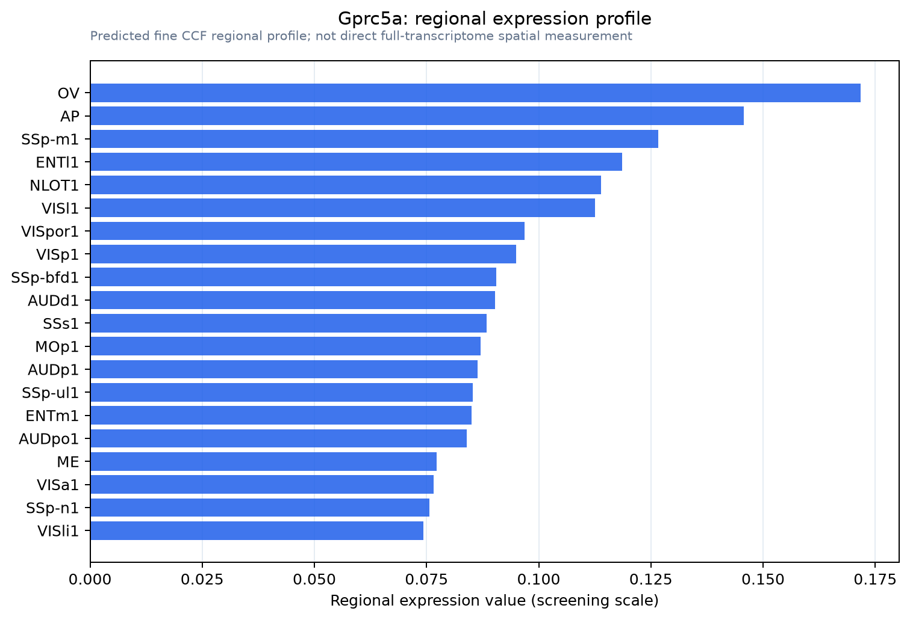

Gprc5a
Retinoic acid-induced protein 3 (G protein-coupled receptor family C group 5 member A) (Retinoic acid-induced gene 1 protein) (RAIG-1)
Spatial tier: REGION_BIASED · Class: GPCR · Top region: OV (Vascular organ of the lamina terminalis) · Positive regions: 43/554
47.0Discovery Score
34.6Targetability Score
CEvidence grade C
What this means: Gprc5a: fine CCF profile is region-biased toward OV (top regions: OV, AP, SSp-m1, ENTl1, NLOT1); this is a discovery lead, not direct proof.
Direct spatial evidence
MERFISH REGION LOCATOR

Regional expression figure

Predicted WMB × fine-CCF profile; not direct full-transcriptome spatial measurement.
Spatial profile
Evidence and specificity
- Evidence status
- PREDICTED_FINE
- Direct sources
- None; predicted localization only
- Exclusive threshold
- 12 positive regions out of 554
- Spatial specificity
- 0.315
- Top-region fraction
- 0.045
- Filter status
- PASS
Interpretation limits
- Cell-type-to-region projection is imputed expression, not direct spatial measurement.
- Adult reference atlases do not establish stability across age, sex, strain, state, or disease.
- Transcript abundance does not guarantee protein abundance or genetic-tool performance.